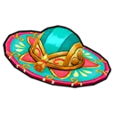

Sombrero de Ladino
Chapéu de ladino · Tier 11 · Nível 33
A furtividade não é o forte dessa roupa, mas com ela você vai ser a alma de qualquer festa!
Atributos
Ataque
73
Defesa
290
Economia
Valor
1.500.000
Tempo de fabricação
11h 40min
XP do comerciante
110.000
Trabalhadores: Alfaiate 27, Mestre 23, Ferreiro 20
Receita


Marcos do projeto
6
Tempo de fabricação -20%
16
-68 Couro
28
Valor +25%
45
-20 Tecido
70
Chance de qualidade +1